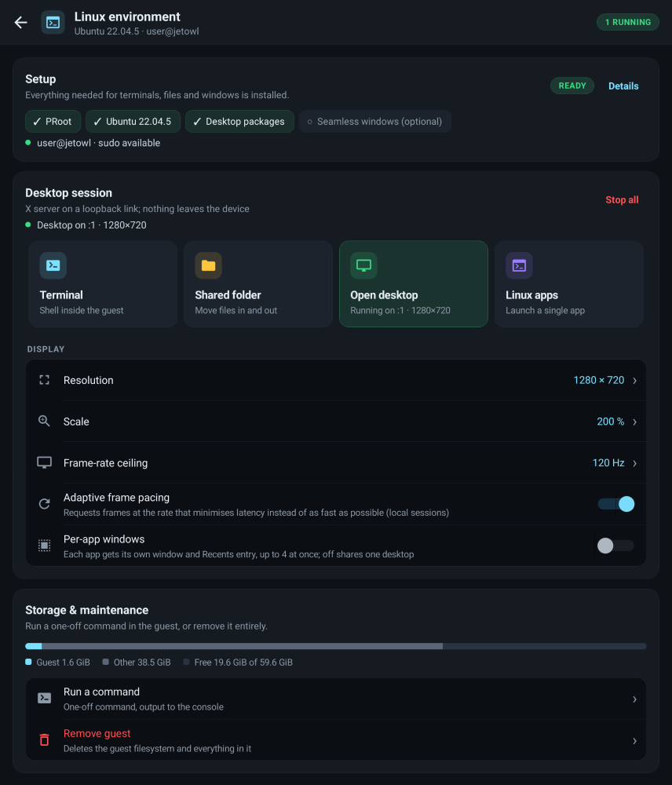

Jetbot NanoOWL¶

Advanced Android Control Interface for Jetbot Nano with ROS2 Integration
Features • Installation • Usage • Architecture • Contributing
Source
Snapshot of README.md from TNG-Blue/JetbotNanoOWL at commit f2ccd4b (submodule Mobile/Android/JetbotNanoOWL). Regenerate with Scripts/mkdocs_hooks/snapshot_submodules.py after updating the submodule.
📋 Overview¶
Jetbot NanoOWL is an Android monitoring and remote-access console for NVIDIA Jetbot Nano robots. The estimation stack — sensor conditioning, state estimation, mapping and the transport — runs in C++ on a native thread; Kotlin is the user interface and nothing else.
This app observes; it does not drive. The guidance laws, velocity loops and operator controls were removed: nothing computed here is written back to the robot. What remains is a console that shows where the robot is and what its sensors say, a SLAM front end, remote access (SSH, SFTP, VNC), and a Linux environment that runs on the phone itself.
Every block in the sensor-to-state path is a discretisation of a named continuous-time design, derived in docs/ESTIMATION_DESIGN.md and checked by a host test suite that asserts the derived property rather than a recorded output.
Key Highlights¶
- 🧮 Provable estimation chain — sensor → median → low-pass → noise ID → EKF → pose fix, with the derivation and a test for each stage
- 🗺️ Real SLAM plumbing — log-odds occupancy grid, Bresenham ray casting, ICP scan matching feeding an absolute pose fix back into the EKF
- 🐧 Linux environment on the phone — a guest rootfs, a real terminal on a pseudo-terminal so
aptandnanobehave, its package manager, shortcuts to the apps you install, and their windows rendered on the Android display the way WSLg does it — each app on its own display, so it gets its own entry in Recents and closing it closes that app alone. The container runtime is fetched by the phone itself, so a stock APK works with no build machine and no bundled GPL code - ⚙️ Native heavy lifting — 50 Hz estimator loop, map rasterisation and VNC pixel decoding all in C++; the UI thread only blits and draws text
- 📊 Live diagnostics — raw odometry against the fused estimate, innovation consistency (NIS), online noise estimates, loop jitter, link counters
- 🖥️ Remote access — multi-tab SSH terminal, SFTP browser and editor, and a native RFB client
✨ Features¶
Estimation chain (native C++)¶
| stage | implementation | reference |
|---|---|---|
| spike rejection | sliding median, rejects bursts of ≤ (w−1)/2 samples exactly | Tukey 1977 |
| linear filtering | first-order low-pass, pre-warped bilinear (−3 dB exactly at f_c), Butterworth/notch biquads | §2 |
| noise identification | Welford moments + innovation-based R̂ with positivity projection | Mehra 1970, Myers & Tapley 1976 |
| odometry | forward differential-drive kinematics with variance propagation | §6 |
| state estimation | EKF on [x y θ v ω], exact constant-twist arc, Joseph-form update, NIS monitor | Bar-Shalom §5.2.3, §6.2 |
| absolute fix | ICP scan match, or a pose from the Isaac ROS graph, weighted by its covariance | §8 |
Mapping and localisation¶
- Log-odds Bayesian occupancy grid; integrating a scan costs one addition per traversed cell (360 beams into a 200×200 grid: 0.21 ms)
- Bresenham ray casting, clamped log-odds, binary map save/load
- Point-to-point ICP scan matching seeded with the odometry prior, feeding
DiffDriveEKF::updatePosewith a variance taken from the match residual — the measurement that bounds dead-reckoning drift - Map rasterised to ARGB in C++, straight into the Android bitmap
Monitoring console (Kotlin)¶
- Custom occupancy-map and strip-chart views; pinch zoom, pan, long-press to measure range and bearing from the robot
- Charts draw raw wheel odometry against the fused estimate, so the filter's contribution is the gap between the two traces
- Live state estimate and its 1σ uncertainty, NIS consistency, online noise estimates, loop rate and jitter, link packet counters
Transport¶
- Binary UDP link with CRC-16/CCITT-FALSE framing, sequence-gap accounting and a robot-side command watchdog (protocol)
- Reference ROS2 bridge in
tools/jetbot_bridge.py, with a--dry-runmode that needs no ROS2 ROS2Managerstill publishesgeometry_msgs/Twistwhen built against rclcpp
Isaac ROS integration¶
tools/isaac_ros_bridge.pyconnects the console to the Isaac_ROS-Jetbot_NanoOWL graph without modifying that repository — it subscribes to what the graph already publishes and publishes to what it already subscribes to, with every topic name a command-line argument- Absolute pose from
/odometryfolded into the EKF as a covariance-weighted Kalman update — the exteroceptive fix that bounds dead-reckoning drift - NanoOWL detections from
/output_detectionsdrawn live in the camera frame - The detector's prompt set from the console and republished on
/input_query: NanoOWL is open vocabulary, so the prompt is the class list - Graph health from
/diagnostics, plus the Jetson's CPU, GPU and temperature - Full guide: docs/ISAAC_ROS_INTEGRATION.md
MAVLink link to the Isaac ROS graph¶
- A second transport. It reads
ros2_network_bridge, the MAVLink v2 node of Isaac_ROS-Jetbot_NanoOWL:ros2 launch ros2_network_bridge jetbot_console.launch.py phone_host:=<phone>. Pick it in Settings → ROS2 Connection → MAVLink - Native C++ codec: CRC-16/MCRF4XX with CRC_EXTRA, byte-wise resync, v1 and v2. It is byte-exact against pymavlink
ODOMETRY(#331) fused as two Kalman updates with the covariances the robot reported, full 3×3 for the pose and 2×2 for the twist. The NED → ENU map is exact, not linearised. An unknown or non-positive-definite covariance is not fused, rather than weighted by a guess- The console is an observer. Its heartbeat is
MAV_TYPE_LOG, so the bridge never takes it for the GCS, and closing the app cannot trip the vehicle's link-loss failsafe - Vehicle state, battery, status texts, and loss in both directions are shown in the diagnostics drawer
- Robot on another network: both ends dial out over TLS to
Server_Relay, a small Go server in the Isaac repository, so the link works through any NAT, the carrier's included. Pick Settings → ROS2 Connection → Relay. The relay passes nothing from the phone but its heartbeat, so an observer token cannot command the robot - Each fix's delay is measured from its timestamp without clock sync. The fix is then carried to the present with the EKF's own motion model and process noise before it is fused
- Design and proofs: docs/MAVLINK_LINK.md
UAV flight console (3-D)¶

- The vehicle is a multirotor, so on the MAVLink source the console tracks a 6-DoF state. A Kalman filter runs on
[p; v]in ENU with the continuous white-noise acceleration model. Its noise densityq̃ = a_max² T_m = 1.6 m²/s³comes from the vehicle's own limits inuav_control.yaml, not from tuning. The attitude is carried to the present on the body rate - 3-D map from the LD19. The bridge sends each scan as standard
OBSTACLE_DISTANCE. The console places every fan with the pose interpolated to the fan's own timestamp, so slices taken at different heights and attitudes stack into a log-odds voxel map (5 cm voxels, Amanatides–Woo traversal, the same model as the desktop dashboard) - Native renderer (orbit, pinch zoom, two-finger pan, oblique / top / chase presets). It draws the voxels coloured by height, the flight path and a hexarotor glyph
- Primary flight display: attitude with roll arc and pitch ladder, speed and altitude tapes with a vertical-speed bar, and a heading tape
- Maps save, load and clear as
.voxfiles - Design and proofs: docs/UAV_3D.md
Remote access¶
- Native RFB decoding (Raw, CopyRect, RRE) writing directly into the bitmap; the pixel format is negotiated so the wire byte order matches the bitmap and the raw path is one word per pixel
- Multi-tab SSH terminal (xterm.js), SFTP browser and file editor
Linux environment (WSLg-style)¶
- Ubuntu 22.04 LTS, and only that: the base image is downloaded, verified against Canonical's published digest, and run under PRoot. 22.04 is the same userspace a Jetson running JetPack 6 has and the release ROS 2 Humble is built for, so a package name resolves on the phone the way it does on the robot
- Setup is a four-step checklist — runtime, guest, desktop base, and optionally a window manager that gives one app the whole display — and nothing else is offered as a bundle: anything beyond setup is installed by name with
aptor from the terminal - Installed apps are discovered from the guest's
.desktopfiles, so anything installed from a shell shows up too; each can be pinned in the app or handed to the Android launcher as a home-screen shortcut - The guest signs you in as
jetbot_owl@Blue, with a workingsudo— a shim, because the guest already runs with every privilege the app has and a setuid binary cannot work under PRoot at all - One folder is visible to both sides —
/mnt/androidin the guest — so an Android file can be opened in Linux and a file written in Linux can be saved back out. Getting files in and out uses the system document picker, so no storage permission is asked for and nothing beyond the chosen file is reached - Their windows render on the phone with no display protocol in between:
Xvfb -fbdirkeeps its screen in a memory-mapped file inside the guest's/tmp, which is a directory this app owns, so a frame is one copy rather than an encode, a loopback socket and a decode. Input and damage go back over X11 itself (XTEST, DAMAGE). Measured at 1280×720: 0.328 ms mean per frame, 26% of the screen touched. The X server is started-nolisten tcp, so there is no port for anything to reach -
The screen is laid out as a settings console:
- setup folds to one line of ticks once it is done;
- Terminal, Shared folder, Desktop and Linux apps are launch tiles;
- display options are a grouped list with switches;
- a storage bar shows the guest against the free space on its volume;
- the console reports how many lines it holds.

- See docs/LINUX_ENVIRONMENT.md

Safety¶
- Emergency stop that dumps every integrator, so releasing it cannot kick
- Feedback watchdog: no telemetry → the inner loop drops to feed-forward and says so, instead of integrating against a stale sample
- Envelope limits on velocity, acceleration and jerk; wheel-speed saturation that preserves the commanded path curvature
- Gain-stability conditions enforced in code, not left to the operator
🛠️ Technology Stack¶
Frontend (Android)¶
- Language: Kotlin
- Min SDK: 24 (Android 7.0)
- Target SDK: 36 (Android 14+)
- UI Framework: Material Components, ViewBinding
- Architecture: MVVM-inspired single-activity
Control core (native)¶
- Language: C++17, no third-party dependencies
- Build System: CMake 3.22.1 (
if(ANDROID)switches between the APK library and a host build with the test runner) - Threading: control loop on its own native thread; UDP receive thread; telemetry handed to the UI under one mutex
- Optional: rclcpp / geometry_msgs when built inside a ROS2 workspace
- Tested on the host:
cmake -S app/src/main/cpp -B build-host && ./build-host/jetbot_core_tests
📦 Installation¶
Prerequisites¶
- Android Studio Ladybug or later
- Android SDK 24+
- NDK r25 or later
- CMake 3.22.1+
- (Optional) ROS2 Humble/Foxy for full functionality
This build targets API 28 on purpose. The Linux environment needs the W^X exemption that
targetSdk <= 28grants, which is what lets the app execute a runtime it downloaded — the same trade Termux makes. The consequence is that Google Play will not accept or update this app; it is for sideloading and GitHub releases. A build that would rather keep a moderntargetSdkcan bundle PRoot instead withtools/fetch-proot.shand raise the target back. Both paths are described in docs/LINUX_ENVIRONMENT.md §3.
Build Steps¶
-
Clone the repository
-
Open in Android Studio
-
Sync Gradle
- Android Studio will automatically sync dependencies
-
Ensure NDK and CMake are installed via SDK Manager
-
Build the project
-
Install on device
Release builds¶
Builds meant to be handed out must be signed with a stable release key, not the shared debug key, and must carry a strictly increasing versionCode:
The key is read from keystore/keystore.properties (git-ignored) or from the RELEASE_STORE_FILE / RELEASE_STORE_PASSWORD / RELEASE_KEY_ALIAS / RELEASE_KEY_PASSWORD environment variables. Keeping one certificate across releases is what lets Android install a new APK as an update and what stops Google Play Protect from treating every build as an unknown app — see docs/APP_SIGNING_AND_PLAY_PROTECT.md.
🚀 Usage¶
Quick start without a robot¶
Without a robot there is no telemetry, so the console has nothing to estimate from. What is usable offline is the rest of the app: the Linux environment (menu → Linux), the SSH and SFTP tools, and the VNC client. The estimation chain itself is exercised by the host test suite rather than by a simulator — see Testing.
With the Isaac ROS graph¶
- On the Jetson, with the Isaac ROS graph already running: (
--dry-runemits synthetic Isaac ROS traffic if the graph is not up yet, and needs no ROS2 installed at all.) - In the app: menu → Connections, enter the robot's IP and press
CONNECT. - The status strip turns green and reads
ROS2 live · pose fixedonce odometry arrives; the perception card fills with NanoOWL detections. Tap 🔍 on that card to change what the detector looks for.
See docs/ISAAC_ROS_INTEGRATION.md for the full topic map, remapping, and troubleshooting.
With a bare robot¶
For a robot that is not running the Isaac ROS graph, the minimal bridge speaks the original packet set:
Reading the console¶
The status strip says where the estimate comes from and how fresh it is: no link, link up · no telemetry, ROS2 live · odometry, or ROS2 live · pose fixed when an absolute fix landed in the last two seconds.
The diagnostics drawer (📈) shows the pose and its 1σ uncertainty, the NIS consistency monitor, the identified sensor noise, the map counters, the link counters and the loop period with its jitter. The two charts draw raw wheel odometry against the fused estimate: the gap between the traces is exactly what the gyro and the pose fixes contributed.
Long-press anywhere on the map to measure — it reports the range and bearing from the robot's estimated pose to the point you picked.
Maps¶
Save, load and clear from the tool column on the right. Maps are written as log-odds snapshots under the app's private storage and reload with their geometry intact.
🏗️ Architecture¶
Project Structure¶
jetbot-nanoowl/
├── app/src/main/
│ ├── cpp/ # native control core
│ │ ├── include/jetbot/
│ │ │ ├── math/matrix.h # dense LA: inverse, Cholesky, spectral norm
│ │ │ ├── filter/filters.h # median, bilinear low-pass, biquad, rate/jerk
│ │ │ ├── estimation/ # EKF + innovation-based noise identification
│ │ │ ├── control/ # PID (used by the display pacer), odometry
│ │ │ ├── mapping/ # log-odds occupancy grid, ICP scan matcher
│ │ │ ├── telemetry/series_buffer.h # ring buffer + min/max decimation
│ │ │ ├── pipeline/ # the assembled chain + plant simulator
│ │ │ ├── net/jetbot_link.h # UDP transport
│ │ │ ├── display/frame_pacer.h # closed-loop desktop frame pacing
│ │ │ └── vnc/rfb_decoder.h # RFB pixel decoding
│ │ ├── src/core/ # implementations (platform independent)
│ │ ├── src/jni/ # native_core, rfb, linux_display, pty
│ │ ├── tests/test_main.cpp # 272 property checks, host build
│ │ └── CMakeLists.txt
│ ├── java/com/tng_blue/jetbotnanoowl/
│ │ ├── NativeCore.kt # JNI surface + telemetry/config layout
│ │ ├── RfbNative.kt # JNI surface for the VNC pixel path
│ │ ├── MainActivity.kt # operator console
│ │ ├── EstimationConfigStore.kt # persistence (defaults come from C++)
│ │ ├── OccupancyMapView.kt # custom views: map and strip charts
│ │ ├── TelemetryChartView.kt
│ │ ├── VNCViewerActivity.kt # RFB protocol; pixels decoded natively
│ │ ├── SSHTerminalActivity.kt # xterm.js terminal, SFTP, editor
│ │ ├── LinuxEnvironment.kt # guest rootfs: bootstrap and PRoot exec
│ │ ├── PRootRuntime.kt # fetches + verifies the runtime on-device
│ │ ├── UbuntuGuest.kt # the one rootfs, with Canonical's digests
│ │ ├── LinuxSurfaceActivity.kt # the guest window: mapped framebuffer, X11 input
│ │ ├── LinuxDisplaySession.kt # X server + window manager in the guest
│ │ ├── LinuxPackageManager.kt # apt / apk / pacman / dnf
│ │ ├── LinuxAppRegistry.kt # .desktop discovery, icons, shortcuts
│ │ ├── LinuxTerminalActivity.kt # terminal into the guest, on a real pty
│ │ ├── PtyProcess.kt # pseudo-terminal wrapper
│ │ ├── LinuxEnvActivity.kt # guided setup, packages, session control
│ │ ├── LinuxAppsActivity.kt # the app drawer
│ │ ├── LinuxLaunchActivity.kt # single launch path for every shortcut
│ │ └── ...
│ └── res/ # dark console theme, layouts, drawables
├── docs/
│ ├── APP_SIGNING_AND_PLAY_PROTECT.md # release signing, versionCode, updates
│ ├── ESTIMATION_DESIGN.md # derivations, proofs, references
│ ├── ISAAC_ROS_INTEGRATION.md # topic map, pose fixes, detections
│ ├── LINUX_ENVIRONMENT.md # guest, desktop path, pacing derivation
│ ├── MAVLINK_LINK.md # MAVLink observer link, delay, relay
│ ├── UAV_3D.md # 6-DoF filter, 3-D map, renderer, PFD
│ └── JETBOT_LINK_PROTOCOL.md # UDP wire format
├── tools/
│ ├── jetbot_link.py # wire format, shared by both bridges
│ ├── jetbot_bridge.py # minimal reference bridge
│ ├── fetch-proot.sh # installs the Linux runtime into jniLibs
│ ├── isaac_ros_bridge.py # Isaac ROS graph bridge
│ ├── test_isaac_ros_bridge.py # message-conversion tests, no ROS2
│ └── link_interop_test.cpp # two-process protocol check
├── build.gradle.kts
├── LICENSE
└── README.md
Component Overview¶
Native layer (C++)¶
EstimationPipeline — owns every block and steps them in order: sensor conditioning, noise identification, EKF predict/update, telemetry. One method (step) is the whole estimator cycle.
DiffDriveEKF — EKF over [x y θ v ω] with the exact constant-twist arc, analytic Jacobians, Q = G diag(σ_a², σ_α²) Gᵗ, Joseph-form update and a NIS consistency monitor.
AdaptiveNoiseEstimator — identifies each measurement variance online from the innovation sequence, so the filter weighs the sensors the robot actually has.
PIDController — the one controller still in the tree. It no longer drives the robot; its consumer is FramePacer.
FramePacer — closes the loop on the Linux desktop's frame latency: an M/G/1 setpoint and an IMC-tuned PI with back-calculation anti-wind-up (derivation).
OccupancyGrid — log-odds mapping, Bresenham ray casting, ARGB rasterisation into the Android bitmap, binary persistence.
alignScans — 2-D ICP with the closed-form Kabsch step, seeded with the odometry prior, producing the absolute pose fix that bounds drift.
JetbotLink — UDP transport with CRC framing and a receive thread.
AlphaBetaTracker — steady-state Kalman filter for the Linux rootfs bootstrap's progress readout (derivation).
JNI bridges — native_core_jni.cpp (estimation, map, telemetry, transport), rfb_jni.cpp (VNC pixels), linux_display_jni.cpp (frame pacing, bootstrap progress), ros2_stub_jni.cpp / ros2_jni.cpp (legacy ROS2Manager, UDP or DDS depending on the build).
Application layer (Kotlin)¶
NativeCore — the only place Kotlin talks to the core. Verifies at startup that both sides agree on the telemetry and config array layouts, then exchanges one double[] per frame.
MainActivity — console: binds views, forwards operator intent, renders the telemetry snapshot at 25 Hz. No control logic.
LinuxEnvActivity / LinuxAppsActivity / LinuxLaunchActivity — the Linux environment: bootstrap, packages, session control, the app drawer, and the one launch path every shortcut goes through.
PRootRuntime — downloads the container runtime from the official Termux repository, verifies each package against the digest that repository publishes, unpacks ar → tar.xz into private storage, and self-tests by running proot --version so a device that refuses to execute it says so immediately.
Custom views — OccupancyMapView (hands its bitmap to the native rasteriser), TelemetryChartView (draws pre-decimated min/max pairs) and DetectionOverlayView.
🔌 Robot interface¶
UDP link (default)¶
rclcpp cannot be cross-compiled into the APK for a normal Android build, so the app speaks a small binary UDP protocol to a bridge node on the robot. Full wire format: docs/JETBOT_LINK_PROTOCOL.md.
| type | direction | payload |
|---|---|---|
0x01 CmdWheel | app → robot | left, right wheel rate [rad/s] |
0x02 CmdTwist | app → robot | v [m/s], ω [rad/s] |
0x03 Heartbeat | app → robot | — |
0x04 OwlQuery | app → robot | open-vocabulary detector prompt |
0x05 SafetyCmd | app → robot | latch or release the emergency stop |
0x10 StateOdom | robot → app | wheel rates, gyro z, yaw, battery, validity flags |
0x11 Scan | robot → app | angle_min, angle_increment, ranges |
0x12 PoseFix | robot → app | absolute pose with its covariance |
0x13 Detections | robot → app | NanoOWL boxes, normalised to [0,1], with labels |
0x14 NodeStatus | robot → app | graph health, detector rate, CPU/GPU/temperature |
Types 0x04, 0x05 and 0x12–0x14 were added rather than changing any existing layout, so an older bridge and a newer app interoperate in both directions; tools/jetbot_bridge.py stays at the original set as the proof.
Framing is CRC-16/CCITT-FALSE; bad frames and sequence gaps are counted and shown in the console. The bridge must implement its own ~200 ms command watchdog, as the reference implementation does.
ROS2 topics¶
When the native library is built inside a ROS2 workspace (find_package(rclcpp) succeeds for the target ABI), ROS2Manager publishes directly:
| Topic | Type | Direction | Description |
|---|---|---|---|
/cmd_vel | geometry_msgs/Twist | publish | body twist command |
Otherwise the same Kotlin API routes through the UDP transport, and the bridge republishes it. With tools/isaac_ros_bridge.py the full map is:
| Topic | Type | Direction |
|---|---|---|
/jetbot/cmd_vel | geometry_msgs/Twist | bridge publishes |
/input_query | std_msgs/String | bridge publishes |
/safety/emergency_stop | std_msgs/Bool | bridge publishes |
/odometry | nav_msgs/Odometry | bridge subscribes |
/joint_states | sensor_msgs/JointState | bridge subscribes |
/imu | sensor_msgs/Imu | bridge subscribes |
/scan | sensor_msgs/LaserScan | bridge subscribes |
/output_detections | vision_msgs/Detection2DArray | bridge subscribes |
/input_image/camera_info | sensor_msgs/CameraInfo | bridge subscribes |
/diagnostics | diagnostic_msgs/DiagnosticArray | bridge subscribes |
Every name is a command-line argument, so a remapped graph needs a different launch line rather than a code change.
🎨 Console layout¶
Watching a robot needs four answers at a glance — where is it, how fast is it going, is the link alive, what does it see. Everything that is not one of those is a number you consult, not one you monitor, so it lives in a drawer.
The console opens in UAV mode, because the vehicle is a multirotor, and the default link is MAVLink. It stays in UAV mode with no link at all:
- the 3-D map replaces the floor plan;
- the primary flight display sits bottom-left;
- the strip under the map shows altitude, vertical speed, ground speed, heading, position σ and the voxel count;
- the mode chip shows the vehicle state.
It switches to the ground-robot layout below only once a JetBot actually streams telemetry over JBL1. That switch is latched, so a short dropout does not swap the layout back. Picking JBL1 without a ground robot keeps the UAV layout, and the vehicle line says that JBL1 carries no flight data.
Always on screen
- Map — full-screen occupancy grid with the travelled path and the robot pose; pinch to zoom, drag to pan, long-press to measure
- Status strip — one dot and one phrase:
ROS2 live · pose fixed,ROS2 live · odometry,link up · no telemetryorno link, plus battery - Speed — estimated
vlarge,ωbeside it - Perception card — live NanoOWL boxes in the camera frame, the strongest label, and the current prompt; 🔍 changes it, tapping the card opens VNC
- Tool row — recentre, zoom, and a menu for save / load / clear map
Diagnostics drawer (the ⌃ button; closed by default, and while it is closed these values are not even formatted, so the UI thread does less work)
- Pose, heading, position uncertainty, NIS, identified sensor noise, map counts
- Raw wheel odometry against the fused estimate, for
vandω - Charts: the same pair drawn from natively decimated min/max envelopes
- Isaac ROS graph: health and the node that reported it, detector rate, CPU, GPU, temperature, pose-fix count and age
- Link: packet counters, loop rate and jitter, estimator consistency
Connections overlay — VNC and SSH endpoints, and the Linux environment (menu button)
🔧 Configuration¶
Control loop¶
Defaults live in jetbot::pipeline::PipelineConfig and are surfaced to the UI through NativeCore.defaultConfig(), so there is one source of truth:
| parameter | default | meaning |
|---|---|---|
| control period | 20 ms | nominal Ts; the loop measures its real period and uses that |
| max linear / yaw | 0.5 m/s, 2.0 rad/s | envelope |
| max accel | 1.2 m/s², 6 rad/s² | applied to the reference |
| encoder / gyro cutoff | 8 Hz, 12 Hz | −3 dB points of the low-pass stage |
| median window | 5 | rejects bursts of ≤ 2 bad samples |
| σ accel / σ angular accel | 0.8 m/s², 3.0 rad/s² | EKF process noise |
| watchdog | 0.6 s | telemetry silence before the loop opens |
| wheel radius / base | 32.5 mm / 112 mm | stock Jetbot chassis |
Network setup¶
- Phone and Jetson on the same network.
- Bridge listens on UDP 9600, app on UDP 9601 (both configurable).
- Permissions (
INTERNET,ACCESS_NETWORK_STATE,ACCESS_WIFI_STATE) are declared in the manifest.
🧪 Testing¶
Native core (no Android toolchain needed)¶
cmake -S app/src/main/cpp -B build-host
cmake --build build-host -j
./build-host/jetbot_core_tests # 381 checks, 0 failures
Each check asserts a property that is derived by hand in docs/ESTIMATION_DESIGN.md or docs/LINUX_ENVIRONMENT.md: the exact −3 dB point of the pre-warped bilinear low-pass, Mehra's R̂ recovered from a known innovation sequence, the PID anti-wind-up fixed point, log-odds linearity, exact ICP recovery of a known transform, the CRC check value, an unbiased estimate against an exactly integrated unicycle, the alpha-beta pole modulus √(1−α), and the M/G/1 optimum ρ* = 1/(1+√(1+C_v²)). See app/src/main/cpp/tests/README.md.
Link interoperability¶
python3 tools/jetbot_bridge.py --phone 127.0.0.1 --phone-port 9611 \
--listen-port 9610 --dry-run &
./build-host/link_interop_test 9610 9611
Runs the app's transport and the robot bridge as two processes over real sockets, and checks the loop converges against a robot in another process.
The same test with --isaac additionally requires the pose fix, the detections and the graph status to survive the round trip, which is what keeps the Python codec in tools/jetbot_link.py and the C++ one in src/core/udp_link.cpp from drifting apart:
python3 tools/isaac_ros_bridge.py --phone 127.0.0.1 --phone-port 9611 \
--listen-port 9610 --dry-run &
./build-host/link_interop_test 9610 9611 --isaac
Isaac ROS message conversion (no ROS2 needed)¶
Android¶
./gradlew test # JVM unit tests
./gradlew connectedAndroidTest # instrumented tests
./gradlew assembleDebug # APK (requires SDK + NDK)
Manual checklist¶
- Link comes up against the bridge; counters advance, no gaps
- With the Isaac ROS bridge: status reads
ROS2 live · pose fixed - The map fills in as scans arrive and the trail follows the estimate
- Changing the detector prompt changes the labels that come back
- Diagnostics drawer opens, shows graph health, and closes
- Pulling the link trips the watchdog and the console says so
- Map save / load round-trips
- Linux: a guest installs, the desktop base installs, an app launches and its window renders
🤝 Contributing¶
We welcome contributions! Please follow these guidelines:
Development Workflow¶
- Fork the repository
-
Create a feature branch
-
Make your changes
- Follow existing code style
- Add comments for complex logic
- Update documentation as needed
- Test thoroughly
-
Commit with descriptive messages
-
Push to your fork
-
Open a Pull Request
Code Style¶
Kotlin
- Follow Kotlin Coding Conventions
- Use meaningful variable names
- Maximum line length: 120 characters
C++
- Follow Google C++ Style Guide
- Use RAII principles
- Prefer smart pointers over raw pointers
📝 Roadmap¶
Done in this revision¶
- Heavy processing moved to C++; Kotlin is the UI layer
- Estimation chain with derivations and a property-based test suite
- EKF state estimation with online noise identification
- Log-odds occupancy mapping, ICP scan matching, map save/load
- UDP transport with a reference ROS2 bridge
- Native VNC pixel decoding
- Linux environment with a WSLg-style display path
- Robot control removed: this end observes and no longer commands
Next¶
- Fix the adaptive noise-estimator collapse described under Known Limitations, so the gyro contributes to the fused yaw rate again
- Camera stream into the minimap (MJPEG or H.264 over the link)
- Loop closure and pose-graph optimisation on top of the scan matcher
- Hextile / Tight RFB encodings (needs the decoder to drive the socket)
- Recorded-telemetry replay for offline analysis
🐛 Known Limitations¶
- ICP along featureless walls — point-to-point correspondences slide along a long straight wall, so such a scan constrains the pose well across the wall and weakly along it. Mitigated by the odometry prior and by deriving the fix variance from the match residual; see §8 of the design document.
- No ROS2 inside the APK — rclcpp is not cross-compiled for Android, so the default transport is the UDP link with a bridge node on the robot.
- RFB encodings — only Raw, CopyRect and RRE are advertised, because those are the ones whose payload length follows from the rectangle header.
- The adaptive noise estimator collapses on the odometry channels — Mehra's identity assumes white innovations, but the wheel rates are low-passed before forward kinematics, so consecutive innovations are correlated,
R̂is driven onto its positivity floor, and the EKF then treats odometry as near-exact. The measured consequence is that the gyro contributes nothing to the fused yaw rate. The host suite prints the numbers and deliberately asserts nothing; see §9 of the design document. This pre-dates the removal of the controllers. - The map has no loop closure — drift is bounded by scan matching but not eliminated over long traverses.
- No simulator — the plant model went with the controllers, so the estimation chain is exercised by the host test suite rather than in the app.
targetSdk = 28— a deliberate reduction in platform hardening, taken so the Linux environment can execute a runtime the phone downloaded. It rules out Google Play distribution and opts the whole app out of the Android 10+ behaviour changes, scoped storage included. See §3 of the Linux document; the alternative is to bundle PRoot and raise the target again.- An X server per Linux window — per-app windows give each app its own display, which is what makes Recents list them separately, and each one costs an X server. Eight run at a time; past that the launcher says so instead of thrashing. Turning the setting off puts everything back on one shared desktop.
📄 License¶
This project is licensed under the Apache License 2.0 - see the LICENSE file for details.
Copyright 2026 TNG-Blue
Licensed under the Apache License, Version 2.0 (the "License");
you may not use this file except in compliance with the License.
You may obtain a copy of the License at
http://www.apache.org/licenses/LICENSE-2.0
Unless required by applicable law or agreed to in writing, software
distributed under the License is distributed on an "AS IS" BASIS,
WITHOUT WARRANTIES OR CONDITIONS OF ANY KIND, either express or implied.
See the License for the specific language governing permissions and
limitations under the License.
👥 Authors¶
TNG-Blue Team
- GitHub: @TNG-Blue
🙏 Acknowledgments¶
- NVIDIA Jetbot Community
- ROS2 Development Team
- Android Open Source Project
- Material Design Guidelines
- Contributors and testers
🌟 Star History¶
If you find this project useful, please consider giving it a star! ⭐
Built with ❤️ by TNG-Blue